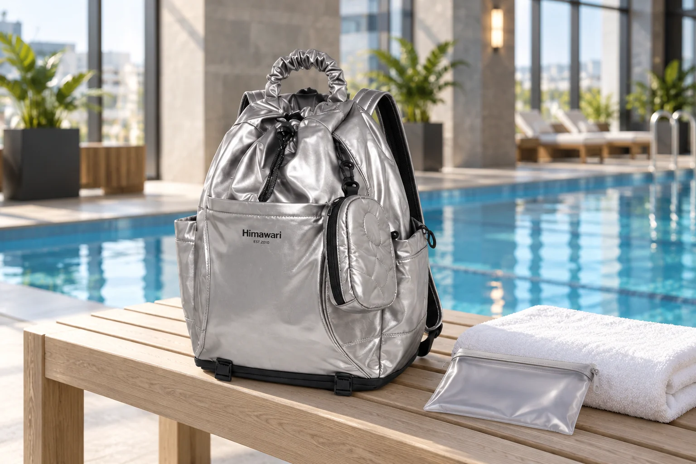

수영장 가는 날의 백팩: 마른 준비와 젖은 귀가를 따로 생각하기

수영장에 갈 때 가방은 갈 때와 올 때 전혀 다른 상태의 물건을 담습니다. 출발할 때는 마른 수건과 갈아입을 옷이지만, 돌아올 때는 젖은 수영복과 물기가 남은 소품이 생깁니다. 백팩 자체가 젖은 물건을 막아줄 것이라고 기대하기보다, 시설 안내를 확인하고 별도의 방수성 주머니와 마른 짐의 위치를 준비하세요. 오늘의 기준은 가방 크기를 키우는 일이 아니라 귀가 후 바로 정리할 수 있는 흐름입니다.
시설 안내와 돌아올 물건부터 적어보세요
방문할 수영장의 수모·수건·샤워용품·보관함 규정을 먼저 확인하세요. 시설에서 제공하는 물건이 있는지에 따라 챙길 짐도 달라집니다. 출발할 때 가방에 들어간 수건은 귀가할 때 젖은 수건이 되고, 갈아입은 옷과 신발도 상태가 달라질 수 있습니다. 마른 짐 목록을 적을 때 그 물건이 돌아올 때 어느 주머니에 들어갈지도 함께 표시하면, 보관함 앞에서 허둥지둥 다시 배치하지 않아도 됩니다.
마른 옷과 전자기기는 한 묶음으로 보호합니다
갈아입을 마른 옷과 전자기기, 지갑 같은 물건은 젖은 짐과 직접 닿지 않도록 닫히는 별도 파우치나 주머니에 둡니다. 수영복을 꺼낼 때 마른 옷까지 바닥에 펼치지 않도록 순서를 정해두세요. 물병이나 세면용품도 뚜껑을 확인하고 세워 담되, 용기가 샌다는 가정까지 포함해 종이류와 떨어뜨립니다. 파우치를 쓴다고 물에 담가도 된다는 뜻은 아니므로 용도와 밀폐 상태를 직접 확인해야 합니다.
젖은 수영복은 가방 안감에 바로 닿지 않게
사용한 수영복과 수건은 물기를 가능한 범위에서 제거한 뒤, 젖은 물건용 주머니에 넣습니다. 젖은 물건을 가방 안감에 바로 기대게 두거나 오래 방치하면 냄새와 습기가 남을 수 있습니다. 주머니 입구를 닫았는지 확인하고 마른 옷을 넣은 묶음과 위치를 나눕니다. 바닥에 물이 고이는 상태라면 백팩에 모두 넣는 대신 시설 규칙에 맞는 별도 운반 방법을 선택하세요. 사진 속 연출은 가방의 방수 성능을 보여주지 않습니다.
보관함에서 꺼내는 순서도 간단하게
탈의실이나 보관함 앞에서는 필요한 순서대로 물건을 꺼내세요. 입장 때는 신발·수영복·수모, 귀가 때는 마른 옷·수건·소지품을 먼저 찾을 수 있으면 좋습니다. 공용 공간의 젖은 바닥에 가방을 오래 내려놓지 말고 시설이 지정한 장소를 이용합니다. 짐을 다시 넣기 전 작은 물건이 벤치나 보관함 안에 남지 않았는지 확인하세요. 보관함 키나 출입 밴드는 시설에 반납할 때까지 정해 둔 안전한 자리에 둡니다.
집에 오면 젖은 묶음을 먼저 꺼냅니다
백팩을 문 옆에 둔 채 다음 날까지 기다리기보다, 젖은 주머니부터 꺼내 내용물을 세탁·건조 지침에 맞게 처리하세요. 가방 안쪽에 습기가 옮겨갔다면 내용물을 모두 비우고 통풍되는 그늘에서 충분히 말립니다. 세탁이나 건조기 사용은 제품 케어 라벨을 확인한 뒤 판단하세요. 대표 사진은 실제 Himawari No.0515 실버를 참조한 수영장 로비 연출 이미지입니다. 수영장용 전용 제품이나 침수 방지 성능을 뜻하지 않습니다.
참고·안내
- Himawari No.0515 제품 정보
- 실제 Himawari No.0515 실버 제품 사진을 참조한 AI 연출 이미지입니다. 수영장과 주변 소품은 연출이며 방수 성능이나 구성품을 나타내지 않습니다.
자주 묻는 질문
젖은 수영복을 백팩에 바로 넣어도 되나요?
젖은 물건이 안감과 마른 옷에 직접 닿지 않도록 별도 주머니를 준비하고, 귀가 후 바로 꺼내 말리세요.
백팩에 물기가 묻었다면 어떻게 하나요?
내용물을 비우고 관리 표시를 확인한 뒤, 통풍되는 그늘에서 충분히 말리세요. 젖은 상태로 닫아 보관하지 않는 것이 좋습니다.